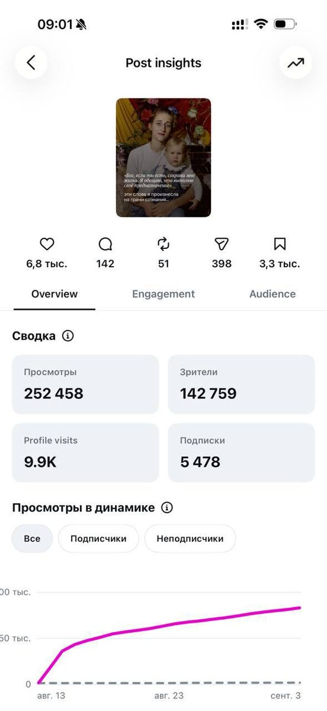
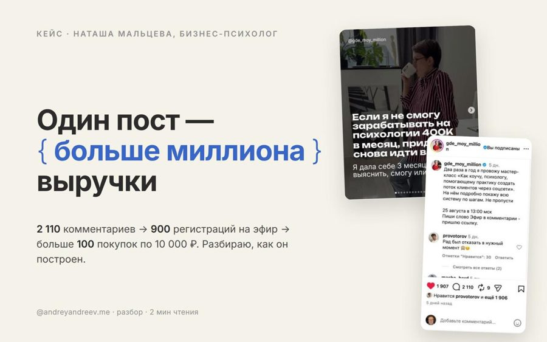
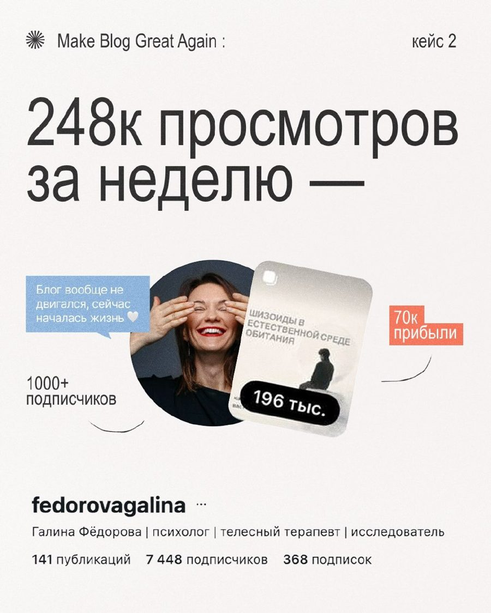
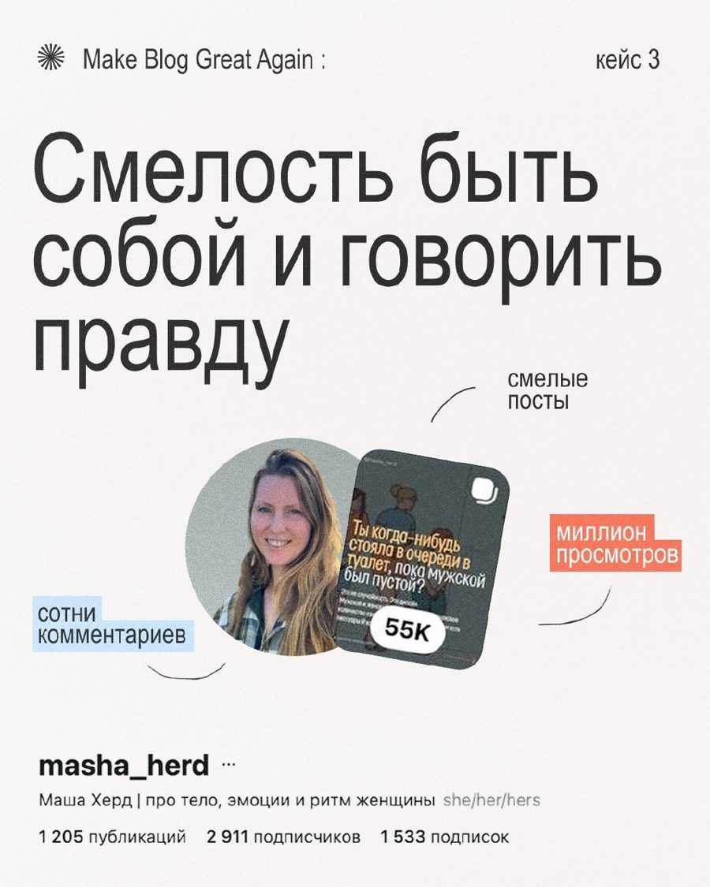
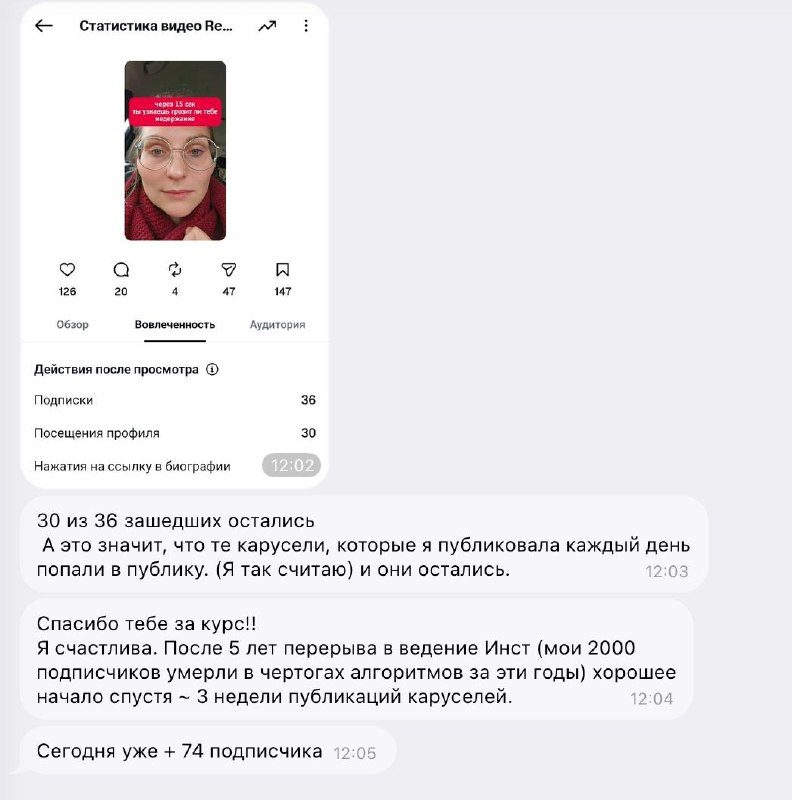

Превью отдельного блока. Для вставки на сайт: cases-block.css + разметка между комментариями BEGIN/END + папка assets/.
::Цифры со скриншотов статистики и из сообщений, которые участницы присылали сами. Каждая карточка ведёт на исходный пост в канале.

кейс · 12 сентябряскрин статистикикакНаучилась делать карусели. Одна собрала 252 458 просмотров и 5 478 подписок.

кейс · 28 августавидео 9 минутпуть2 110 комментариев → 900 регистраций на эфир → больше 100 покупок практикума за 10 000 ₽.

кейс · 25 июля9 слайдовбыло«Блог вообще не двигался».

кейс · 25 июля9 слайдовкакСмелые посты вместо безопасных.

кейс · 11 сентябрясообщение участницыкакТри недели публиковала карусели каждый день. «30 из 36 зашедших остались».